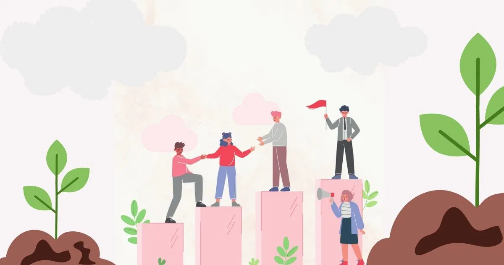
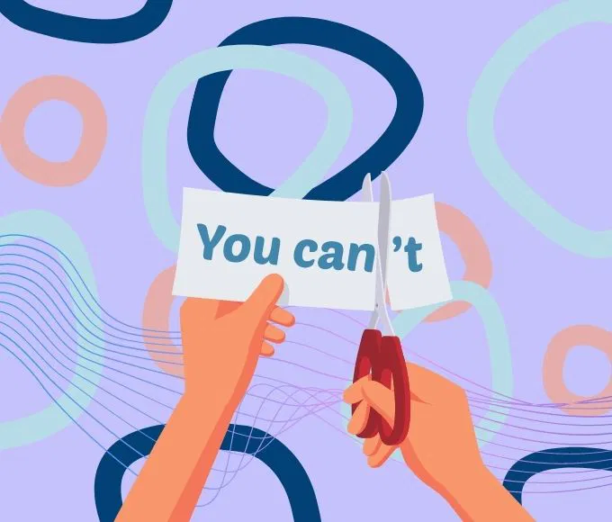
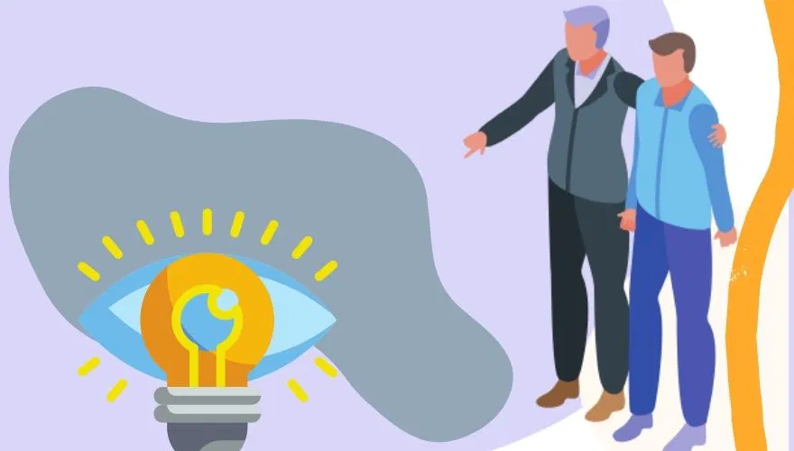
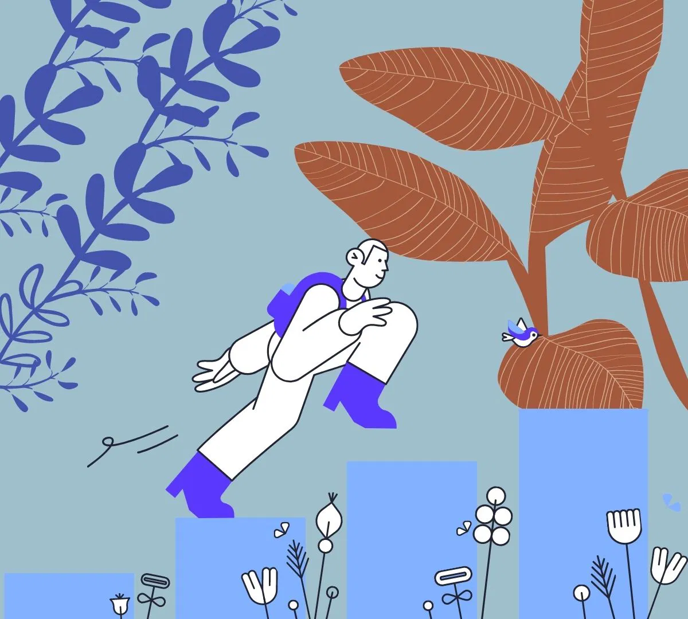

At some point in life, everyone encounters moments of feeling lost or unmotivated. Whether it's due to overwhelming responsibilities, significant life changes, or a series of setbacks, the sensation of drifting without a clear direction can be deeply unsettling. It’s as if the spark that once drove us forward has dimmed, leaving us with a sense of confusion and disorientation. This lack of motivation can permeate various aspects of our lives, from our careers and personal goals to our relationships and self-care routines. Feeling lost is not just an emotional state but can manifest physically and mentally, leading to fatigue, anxiety, and even depression. When motivation dwindles, it becomes challenging to take action, make decisions, or even get out of bed in the morning. The once vivid dreams and ambitions may seem distant, buried under layers of doubt, fear, and inertia. However, it’s important to recognize that feeling lost is not a permanent condition. It is a signal, a call to pause, reflect, and reorient ourselves. Motivation is not something that is either present or absent but rather a dynamic force that can be rekindled and cultivated. By understanding the root causes of our lost feelings and taking proactive steps to reignite our inner drive, we can rediscover our path and move forward with renewed energy and purpose. This article offers 10 practical steps to help you regain motivation when you feel lost. These strategies are designed to help you reconnect with your goals, overcome obstacles, and build a sustainable sense of momentum. Whether you’re struggling with a lack of direction in your career, personal life, or creative pursuits, these steps will guide you back on track and empower you to take charge of your journey.
The first and most crucial step in getting motivated is to acknowledge and accept your feelings of being lost. Often, people try to suppress or ignore these emotions, hoping they will disappear on their own. However, this approach only leads to further frustration and stagnation. By acknowledging your feelings, you are taking the first step toward understanding the underlying causes of your lack of motivation. Allow yourself to sit with your emotions without judgment. Recognize that it’s okay to feel lost—it’s a natural part of the human experience. Journaling can be a helpful tool in this process. Write down what you’re feeling and why you think you might be feeling this way. Are there specific events or circumstances that have contributed to your current state? Are there unmet needs or unexpressed desires that are causing you distress? Understanding your emotions is key to moving forward. By identifying the root of your feelings, you can begin to address the issues that are holding you back and take steps to overcome them.

When motivation wanes, it’s often because we have lost touch with our core values—the fundamental beliefs and principles that guide our actions and decisions. Reconnecting with these values can help realign your priorities and provide a sense of purpose. Take some time to reflect on what truly matters to you. What are the values that you hold dear? Is it creativity, integrity, family, personal growth, or making a positive impact on the world? Consider how these values have influenced your past decisions and how they align with your current goals. Once you have identified your core values, assess how your current life situation aligns with them. Are you living in accordance with these values, or have you drifted away from them? If there is a disconnect, think about how you can bring your actions and goals back in line with your values. This alignment is crucial for rekindling motivation and finding a sense of direction.
When you’re feeling lost, the idea of tackling large, long-term goals can be overwhelming and discouraging. To regain motivation, it’s important to start small and focus on achievable tasks that can provide a sense of accomplishment. Break down your larger goals into smaller, manageable steps. For example, if your goal is to start a new career, begin by researching potential industries or updating your resume. If you’re looking to improve your health, start with a simple daily exercise routine or make small changes to your diet. Each small victory will build momentum and boost your confidence. Over time, these small steps will accumulate, leading to significant progress toward your larger goals. The key is to create a series of “wins” that keep you motivated and moving forward.
One of the most effective ways to reignite motivation is to reconnect with activities that bring you joy and fulfillment. Passion is a powerful motivator, and engaging in activities that you love can help you rediscover your drive. Think about the hobbies or interests that once excited you. Have you neglected these passions in recent years? Whether it’s painting, playing music, writing, gardening, or any other creative outlet, make time to indulge in these activities. Doing something you love can provide a much-needed break from stress and help you reconnect with your inner self. Additionally, exploring new hobbies or interests can open up new avenues for motivation. Trying something new can be invigorating and can lead to new friendships, opportunities, and insights that further inspire you.
It’s easy to fall into a cycle of self-criticism when you’re feeling lost and unmotivated. However, harsh self-judgment only exacerbates feelings of inadequacy and can lead to further demotivation. Instead, practice self-compassion and treat yourself with the same kindness and understanding that you would offer a friend. Recognize that everyone goes through periods of uncertainty and that it’s okay to not have everything figured out. Be gentle with yourself as you navigate this challenging time. Remember that progress is not always linear, and it’s okay to take small steps forward. Self-compassion also involves taking care of your physical and mental well-being. Ensure that you’re getting enough rest, eating well, and engaging in activities that nourish your body and mind. When you take care of yourself, you’re better equipped to tackle challenges and regain motivation.

The people you surround yourself with can have a significant impact on your motivation and outlook on life. If you’re feeling lost, it’s important to seek out positive influences—people who inspire, support, and encourage you. Spend time with friends, family, or mentors who uplift you and remind you of your strengths and potential. These individuals can provide valuable perspective and help you see the possibilities that you may have overlooked. Positive relationships are a source of encouragement and can reignite your motivation by offering support and guidance. In addition to personal relationships, consider engaging with motivational content, such as books, podcasts, or videos. These resources can provide inspiration, offer new insights, and help you stay focused on your goals.
One of the main reasons people feel lost is the fear of uncertainty or failure. This fear can be paralyzing, leading to inaction and further feelings of stagnation. However, it’s important to remember that taking action is the only way to move forward, even if the path is not entirely clear. Start by taking small, deliberate actions toward your goals, even if you’re unsure of the outcome. Each step you take, no matter how small, builds momentum and provides valuable experience. Over time, these actions will help you gain clarity and confidence, reducing your sense of being lost. Embrace the uncertainty as part of the journey. Understand that not everything will go according to plan, and that’s okay. The important thing is to keep moving forward, learning from your experiences, and adjusting your course as needed.

As you take steps to regain motivation, it’s essential to regularly reflect on your progress. This reflection helps you recognize how far you’ve come and provides a sense of accomplishment, even if you’re not yet where you want to be. Set aside time to review your goals, actions, and achievements. What have you accomplished in the past week or month? What challenges have you overcome? What lessons have you learned? Reflecting on your progress can help you stay motivated and focused on your long-term goals. If you find that you’ve veered off course, don’t be discouraged. Use this reflection as an opportunity to adjust your approach and realign with your values and goals. Remember that progress is a journey, and it’s natural to encounter setbacks along the way.
If you’ve been struggling with feelings of being lost or unmotivated for an extended period, it may be helpful to seek professional guidance. A therapist, coach, or counselor can provide valuable support, helping you explore the underlying causes of your feelings and develop strategies to overcome them. Professional guidance can offer a fresh perspective, helping you identify patterns or obstacles that you may not have recognized on your own. It can also provide you with tools and techniques to manage stress, build resilience, and maintain motivation in the face of challenges. Don’t hesitate to reach out for help if you need it. Seeking professional support is a proactive step toward regaining motivation and finding your way forward.
Finally, it’s important to celebrate your successes, no matter how small they may seem. Recognizing and celebrating your achievements reinforces positive behavior and boosts your motivation to continue striving toward your goals. Take time to acknowledge the progress you’ve made, whether it’s completing a task, reaching a milestone, or overcoming a challenge. Treat yourself to something special, share your success with others, or simply take a moment to reflect on how far you’ve come. Celebrating your successes not only helps you stay motivated but also fosters a positive mindset. It reminds you that you are capable of achieving your goals and that every step forward is a step in the right direction.
Feeling lost and unmotivated is a common experience that many people encounter at different stages of their lives. Whether triggered by personal setbacks, professional challenges, or simply the wear and tear of daily life, the sense of being adrift can be overwhelming. Yet, it’s crucial to recognize that these feelings, while difficult, are not insurmountable. They represent a natural part of the human journey, often signaling a need for reflection, realignment, and growth. The process of regaining motivation is deeply personal and requires both patience and persistence. It’s about understanding that motivation is not a constant state but a fluctuating force that can ebb and flow depending on various internal and external factors. When you feel lost, it’s not a sign of weakness or failure but rather an opportunity for introspection and renewal. By following the steps outlined in this article—acknowledging your feelings, reconnecting with your core values, setting achievable goals, and taking proactive steps—you can gradually regain your sense of direction and purpose. With each small action, you will build momentum, rediscover your passions, and reclaim the motivation needed to move forward. Remember that progress is not always linear, and setbacks are a normal part of the process. Be kind to yourself, seek support when needed, and celebrate each achievement, no matter how small. By taking consistent steps toward your goals and nurturing your motivation, you can overcome feelings of being lost and create a fulfilling path forward.